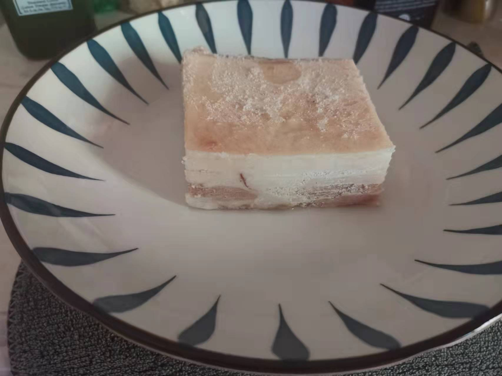
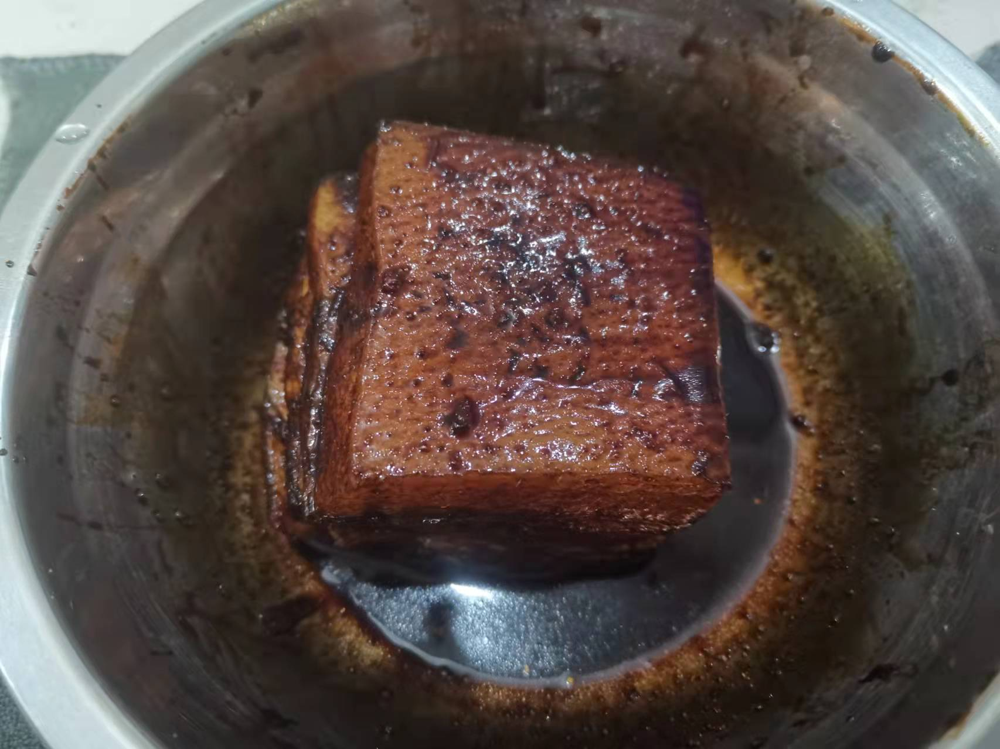
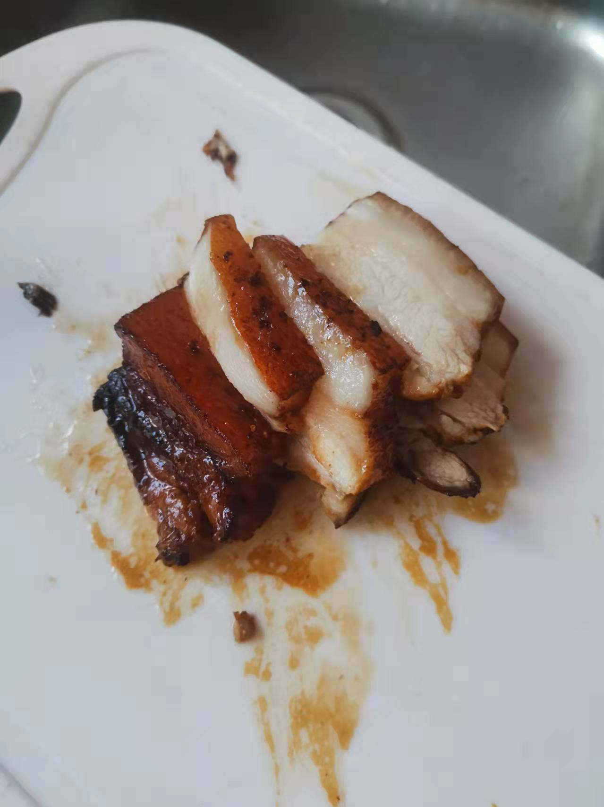
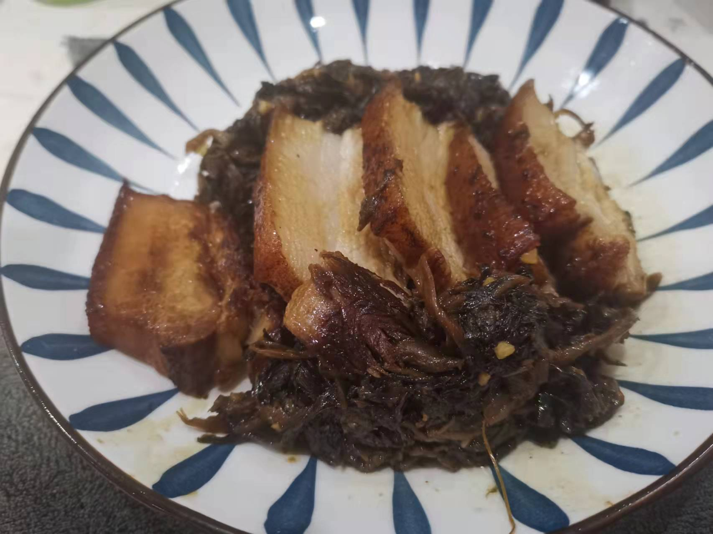

梅菜扣肉的做法
梅菜扣肉造型别致、大方得体，颜色酱红油亮，汤汁黏稠鲜美，扣肉肥而不腻，食之软烂醇香。
预估烹饪难度：★★★★
必备原料和工具
- 五花肉
- 梅菜
- 五香粉
- 食用油
- 白砂糖
- 老抽
- 生抽
- 小米椒
- 蒜末
- 食用盐
- 鸡精
计算
每份：
- 五花肉 200 g
- 梅菜 30 g
- 五香粉 2 g
- 食用油 300 ml
- 白砂糖 5 g
- 老抽 30 ml
- 生抽 20 ml
- 小米椒 1 个
- 蒜末 10 g
- 食用盐 2 g
- 鸡精 2 g
操作
- 梅菜放到清水中，浸泡 1 小时
- 锅中倒入 50 ml 食用油，将整个五花肉猪皮朝下，放到锅中 1 分钟 ，取出挂掉猪皮 【可选】
- 锅中加入开水，放入五花肉，大火煮 20 分钟 （筷子可以插进五花肉），取出五花肉
- 在五花肉表面涂抹均匀老抽、五香粉、白砂糖，放置 15 分钟
- 起锅烧油，加入五花肉，中火油炸直至两面金黄色（3-5 分钟）
- 起锅烧油，倒入梅菜，加上小米椒、蒜蓉、鸡精、食用盐后翻炒，直至炒干梅干菜水分
- 五花肉切片（后端 0.5-1 cm）,放在大碗中，散上梅干菜
- 中火蒸 45 分钟
- 拿个盘子倒盖在五花肉大碗中，将五花肉倒在盘子中
   
附加内容
- 制作过程中发现，脆皮五花肉真香 Orz~
- 不喜欢吃甜的可以去掉白砂糖，不影响主流程
- 倒数第二个步骤，可以根据个人喜好调整时间
- 炒干梅干菜的作用是为了后续吸油（盲猜）
如果您遵循本指南的制作流程而发现有问题或可以改进的流程，请提出 Issue 或 Pull request 。